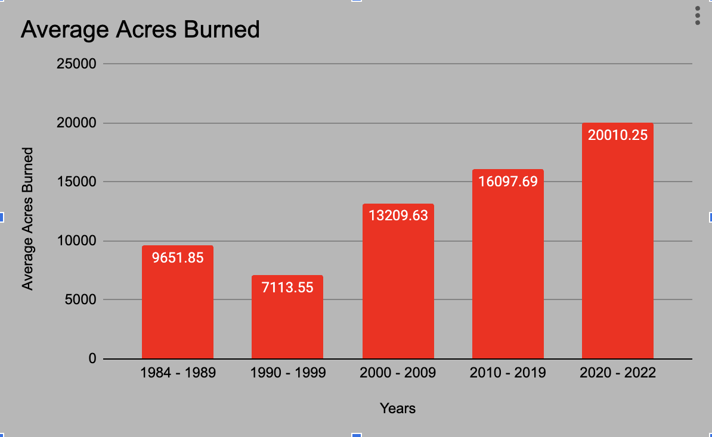

The results from the data provided showcase that wildfires have been increasing in large amounts through the decades. For example, there was only one wildfire that took place in the 1970s, and that was in 1973 and it burned 499 acres. In 2022 alone 28 wildfires took place that were over 1000 acres. From 1984 - 2022 the average size of these wildfires has shown a gradual increase in size but has been more consistent. There are notable wildfire sizes from year to year, some years did have very large wildfires, but overall as the years have progressed so have the size and the occurrence of the fires. From 1984 - 1989 saw 34 wildfires over 1000 acres, and from 1990 - 1999 there were 34 wildfires. In just ten years time from 2000 - 2009, the number of wildfires over 1000 acres tripled (97). The biggest change in any decade so far is from 2010 - 2019 and that decade saw 213 wildfires greater than 1000 acres. Just within the last three years, there has been a larger increase in wildfires in such a short time, 81 of them being over 1000 acres. Climate change has played a role in the increase in wildfire sizes. Some factors that could help these wildfires get bigger are rising temperatures and decreased precipitation across Washington State. Below I have added a chart I made in Google Sheets to represent the average amount of acres burned through the years of wildfires over 1000 acres. The chart can make a clear distinction that wildfires have been getting larger with the increasing frequency of wildfires and size.
Here is a graph displaying average acres burned over each decade.
